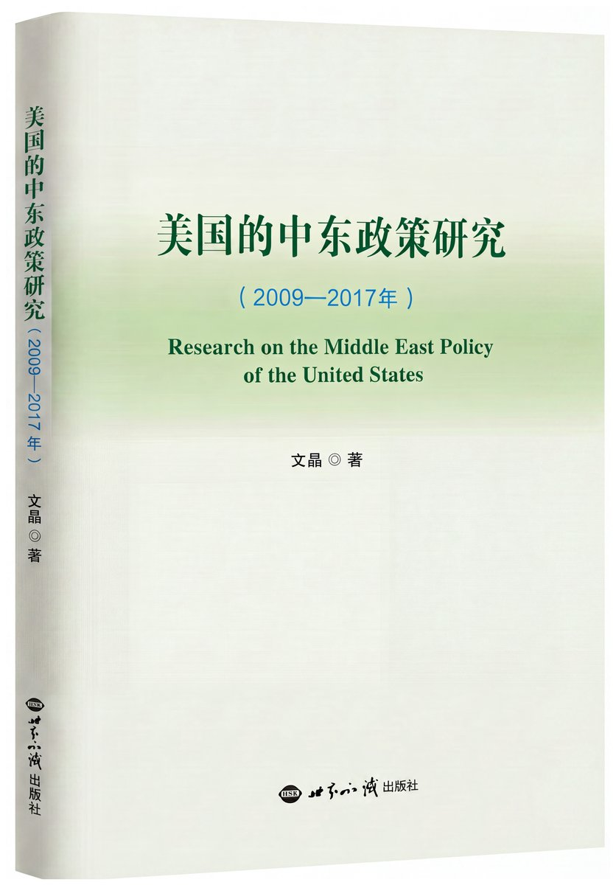

Jodie Wen
Fellow, Center for International Security and Strategy (CISS), Tsinghua University
Scholar of U.S. foreign policy and Middle East politics; former senior journalist covering 40+ countries. Author of Studies of U.S. Middle East Policy (2009–2017), and a frequent commentator for The New York Times, BBC, CGTN and other leading outlets.
The Book

Studies of U.S. Middle East Policy (2009–2017)
A systematic study of U.S. policy toward the Middle East from 2009 to 2017, drawing on Dr. Wen's research and field experience in the region.
View all →Selected Publications
Summer Davos Observations: Why the Middle East Will Become an Important Arena for Global Scaled Innovation
CISS, Tsinghua University · 2026-07-06
The UAE's Exit from OPEC: Strategic Considerations
CISS, Tsinghua University · 2026-05-08
BRICS Will Shape the World With China
China-US Focus · 2024-11-18
Media
The Point with Liu Xin: Middle East tensions and the US-Israel-Iran war
CGTN Global Watch interview: US-Iran conflict and the Middle East
Tiger Talk: one year of the Israel-Hamas war — will the Middle East conflict spiral out of control?
-
Also featured in
- The New York Times
- BBC
- South China Morning Post
- Phoenix TV
- China-US Focus
原型说明：正式上线时缩略图将替换为节目真实封面（抓取或人工提供），点击卡片新标签页打开原视频。
More about Jodie
原型说明：6 张均为占位块，等你提供伊朗、达沃斯等真实照片后替换；说明文字三语展示。